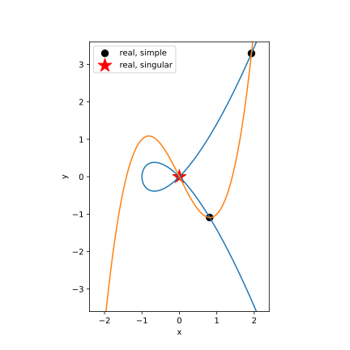
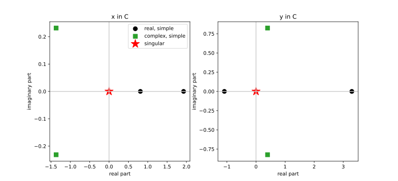

🗃️ A dataframe of solutions: filtering and plotting with pandas¶
A solve gives you more than a pile of points. Every solution carries metadata – is it finite,
is it real, is it singular, what is its multiplicity and condition number – and once you have
all of that in one table, sorting the solutions into categories and drawing them becomes a
matter of one-line filters. That table is what to_dataframe() returns: the whole solve as a
pandas DataFrame, one row per solution.
We will solve the intersection of two plane curves chosen to show every kind of root at once – real and complex, simple and singular – and then use the DataFrame to plot them.
Two plane curves¶
The first curve is a nodal cubic, \(y^2 = x^3 + x^2\). It crosses itself at the origin: that self-crossing is a node, a singular point of the curve. The second is another cubic, \(y = x^3 - 2x\), threaded through that node.
import bertini
from bertini import ZeroDimSolver
x, y = bertini.Variable('x'), bertini.Variable('y')
sys = bertini.System()
sys.add_function(y*y - x**3 - x**2) # nodal cubic y^2 = x^3 + x^2 (node at the origin)
sys.add_function(y - x**3 + 2*x) # second cubic y = x^3 - 2x (passes through it)
sys.add_variable_group(bertini.VariableGroup([x, y]))
solver = ZeroDimSolver(sys, mptype='adaptive')
solver.solve()
Because the second curve runs through the node – where the first curve’s gradient vanishes – the two curves meet there singularly: two homotopy paths arrive at the same point, giving it multiplicity two. Away from the node they meet transversally, in a mix of real and complex points.
One row per solution¶
to_dataframe() lays the solve out as a table. By default it keeps only the finite
solutions (omit_infinite=True); each row is a solution – the whole point in a single
solution column, followed by every metadata field.
import pandas as pd
df = solver.to_dataframe()
assert len(df) == 5 # five distinct finite solutions
assert {'solution', 'is_real', 'is_singular', 'multiplicity'} <= set(df.columns)
assert len(df['solution'].iloc[0]) == 2 # each cell is the whole (x, y) point
The solution cell is the whole point (a copied vector), not exploded into x0, x1,
… columns – if you want per-coordinate columns, you split it yourself (we do exactly that for
plotting, below).
One row per distinct solution. A multiplicity-\(m\) solution arrives from the solver as
\(m\) coincident endpoints – the node here is the end of two paths. Carrying \(m\)
identical rows around is a nuisance, so to_dataframe() merges each cluster to one
representative row by default (merge_multiplicities=True); the multiplicity column still
records the \(m\). The clustering is the solver’s own (the same C++ test that computes
multiplicity), not a re-derivation here. Pass merge_multiplicities=False to get every endpoint:
assert len(solver.to_dataframe(merge_multiplicities=False)) == 6 # the node counted twice
The last column, system, is a reference to the (target) system these solutions satisfy – cheap,
since every row shares the one object rather than a copy, and the natural key when you stack the
frames from several solves into one database and need to know which solve each row came from.
assert df['system'].iloc[0] is df['system'].iloc[-1] # one shared reference, not a per-row copy
Now each category is a filter on the frame – and the metadata rides along with the points, so you never have to line up two parallel lists by index:
real_simple = df[df.is_real & ~df.is_singular] # transverse real crossings
complex_simple = df[~df.is_real & ~df.is_singular] # a complex-conjugate pair
singular = df[df.is_singular] # the node, one row, multiplicity 2
assert len(real_simple) == 2
assert len(complex_simple) == 2
assert len(singular) == 1 and (singular.multiplicity == 2).all()
(The three paths that diverged are not in the frame; solver.to_dataframe(omit_infinite=False)
keeps them, and solver.infinite_solutions() returns just those at-infinity endpoints.)
The catch: a complex root does not live in the plane¶
Here is the honest difficulty in drawing these solutions. A solution is a pair \((x, y)\) of complex numbers – four real numbers – but the page has only two axes. Only the real solutions are genuine points of the real \((x, y)\) plane; the complex ones are not there at all. So we draw two different kinds of picture.
To plot, pull the two coordinates out of the solution cell – each is a
bertini.complex_mp – and lift them to Python complex so we can take real and
imaginary parts. This is the “split it yourself” step: one column per coordinate, made on demand.
df['x'] = [complex(p[0]) for p in df.solution]
df['y'] = [complex(p[1]) for p in df.solution]
df['x_re'], df['x_im'] = df.x.map(lambda z: z.real), df.x.map(lambda z: z.imag)
df['y_re'], df['y_im'] = df.y.map(lambda z: z.real), df.y.map(lambda z: z.imag)
real_simple, singular = df[df.is_real & ~df.is_singular], df[df.is_singular]
The real plane¶
The two curves and the real roots live here. Draw the curves as zero-contours and drop the real solutions on top – circles for the transverse crossings, a star for the singular node:
import matplotlib.pyplot as plt
gx, gy = np.meshgrid(np.linspace(-2.4, 2.4, 500), np.linspace(-3.6, 3.6, 500))
fig, ax = plt.subplots(figsize=(6, 6))
ax.contour(gx, gy, gy**2 - gx**3 - gx**2, levels=[0], colors='C0') # y^2 = x^3 + x^2
ax.contour(gx, gy, gy - gx**3 + 2*gx, levels=[0], colors='C1') # y = x^3 - 2x
ax.scatter(real_simple.x_re, real_simple.y_re, c='k', marker='o', s=70, label='real, simple')
ax.scatter(singular.x_re, singular.y_re, c='r', marker='*', s=300, label='real, singular')
ax.legend(); ax.set_xlabel('x'); ax.set_ylabel('y'); ax.set_aspect('equal')
plt.show()

The two curves and the real roots. The complex roots are simply absent – they are not points of this plane.¶
The complex planes¶
To see every root – complex ones included – give each coordinate its own complex plane. One panel plots every solution’s \(x\)-value as a point in \(\mathbb{C}\) (real part against imaginary part); the other does the same for \(y\). Real roots land on the horizontal (real) axis; a complex-conjugate pair sits mirror-imaged across it. The same pandas subsets color the points by category:
complex_simple = df[~df.is_real & ~df.is_singular]
cats = [('real, simple', real_simple, 'k', 'o', 70),
('complex, simple', complex_simple, 'C2', 's', 70),
('singular', singular, 'r', '*', 300)]
fig, axes = plt.subplots(1, 2, figsize=(11, 5))
for ax, (re, im, title) in zip(axes, [('x_re', 'x_im', 'x in C'), ('y_re', 'y_im', 'y in C')]):
ax.axhline(0, color='0.8'); ax.axvline(0, color='0.8')
for label, sub, color, marker, size in cats:
ax.scatter(sub[re], sub[im], c=color, marker=marker, s=size, label=label)
ax.set_title(title); ax.set_xlabel('real part'); ax.set_ylabel('imaginary part')
axes[0].legend()
plt.show()

Each coordinate in its own complex plane. The two real roots lie on the real axis; the complex pair is mirrored across it; the node (a real point) sits on the axis with multiplicity two.¶
Why this scales¶
Nothing above touched a path index or a parallel metadata list – the DataFrame carries the points and their classification together, so a category is a filter and a plot is the filtered columns. The same table is the natural unit to accumulate: concatenate the frames from many related solves (a parameter sweep, the stages of a decomposition) and you have a growing database of solutions to query, group, and plot with the whole of pandas at hand.
Complete example¶
The whole tutorial as one runnable script – it saves the figure(s) shown above:
"""A database of solutions: filtering and plotting with pandas.
Assembled from the ``.. testcode::`` blocks of the solution_dataframe tutorial.
Solves the intersection of two plane curves (a nodal cubic and a second cubic
threaded through its node), lays the solve out as a pandas DataFrame, filters the
solutions by category, and draws two figures: the real plane and the complex planes.
Run: python solution_dataframe.py
"""
import os
import matplotlib
matplotlib.use('Agg') # headless: no display needed
import matplotlib.pyplot as plt
import numpy as np
import pandas as pd
import bertini
from bertini.nag_algorithm import ZeroDimSolver
_OUT = os.path.dirname(os.path.abspath(__file__))
def two_plane_curves():
"""Build and solve the intersection of the two cubics."""
x, y = bertini.Variable('x'), bertini.Variable('y')
sys = bertini.System()
sys.add_function(y*y - x**3 - x**2) # nodal cubic y^2 = x^3 + x^2 (node at the origin)
sys.add_function(y - x**3 + 2*x) # second cubic y = x^3 - 2x (passes through it)
sys.add_variable_group(bertini.VariableGroup([x, y]))
solver = ZeroDimSolver(sys, mptype='adaptive')
solver.solve()
return solver
def one_row_per_solution(solver):
"""Lay the solve out as a DataFrame, one row per distinct finite solution."""
df = solver.to_dataframe()
assert len(df) == 5 # five distinct finite solutions
assert {'solution', 'is_real', 'is_singular', 'multiplicity'} <= set(df.columns)
assert len(df['solution'].iloc[0]) == 2 # each cell is the whole (x, y) point
assert len(solver.to_dataframe(merge_multiplicities=False)) == 6 # the node counted twice
assert df['system'].iloc[0] is df['system'].iloc[-1] # one shared reference, not a per-row copy
# each category is a filter on the frame
real_simple = df[df.is_real & ~df.is_singular] # transverse real crossings
complex_simple = df[~df.is_real & ~df.is_singular] # a complex-conjugate pair
singular = df[df.is_singular] # the node, one row, multiplicity 2
assert len(real_simple) == 2
assert len(complex_simple) == 2
assert len(singular) == 1 and (singular.multiplicity == 2).all()
return df
def split_coordinates(df):
"""Pull the two coordinates out of the solution cell into their own columns."""
df['x'] = [complex(p[0]) for p in df.solution]
df['y'] = [complex(p[1]) for p in df.solution]
df['x_re'], df['x_im'] = df.x.map(lambda z: z.real), df.x.map(lambda z: z.imag)
df['y_re'], df['y_im'] = df.y.map(lambda z: z.real), df.y.map(lambda z: z.imag)
real_simple, singular = df[df.is_real & ~df.is_singular], df[df.is_singular]
return real_simple, singular
def plot_real_plane(real_simple, singular):
"""The two curves and the real roots, in the real (x, y) plane."""
gx, gy = np.meshgrid(np.linspace(-2.4, 2.4, 500), np.linspace(-3.6, 3.6, 500))
fig, ax = plt.subplots(figsize=(6, 6))
ax.contour(gx, gy, gy**2 - gx**3 - gx**2, levels=[0], colors='C0') # y^2 = x^3 + x^2
ax.contour(gx, gy, gy - gx**3 + 2*gx, levels=[0], colors='C1') # y = x^3 - 2x
ax.scatter(real_simple.x_re, real_simple.y_re, c='k', marker='o', s=70, label='real, simple')
ax.scatter(singular.x_re, singular.y_re, c='r', marker='*', s=300, label='real, singular')
ax.legend(); ax.set_xlabel('x'); ax.set_ylabel('y'); ax.set_aspect('equal')
fig.savefig(os.path.join(_OUT, 'solution_dataframe_real_plane.svg'))
fig.savefig(os.path.join(_OUT, 'solution_dataframe_real_plane.png'), dpi=150)
def plot_complex_planes(df, real_simple, singular):
"""Each coordinate in its own complex plane, colored by category."""
complex_simple = df[~df.is_real & ~df.is_singular]
cats = [('real, simple', real_simple, 'k', 'o', 70),
('complex, simple', complex_simple, 'C2', 's', 70),
('singular', singular, 'r', '*', 300)]
fig, axes = plt.subplots(1, 2, figsize=(11, 5))
for ax, (re, im, title) in zip(axes, [('x_re', 'x_im', 'x in C'), ('y_re', 'y_im', 'y in C')]):
ax.axhline(0, color='0.8'); ax.axvline(0, color='0.8')
for label, sub, color, marker, size in cats:
ax.scatter(sub[re], sub[im], c=color, marker=marker, s=size, label=label)
ax.set_title(title); ax.set_xlabel('real part'); ax.set_ylabel('imaginary part')
axes[0].legend()
fig.savefig(os.path.join(_OUT, 'solution_dataframe_complex_planes.svg'))
fig.savefig(os.path.join(_OUT, 'solution_dataframe_complex_planes.png'), dpi=150)
def main():
solver = two_plane_curves()
df = one_row_per_solution(solver)
real_simple, singular = split_coordinates(df)
plot_real_plane(real_simple, singular)
plot_complex_planes(df, real_simple, singular)
if __name__ == '__main__':
main()